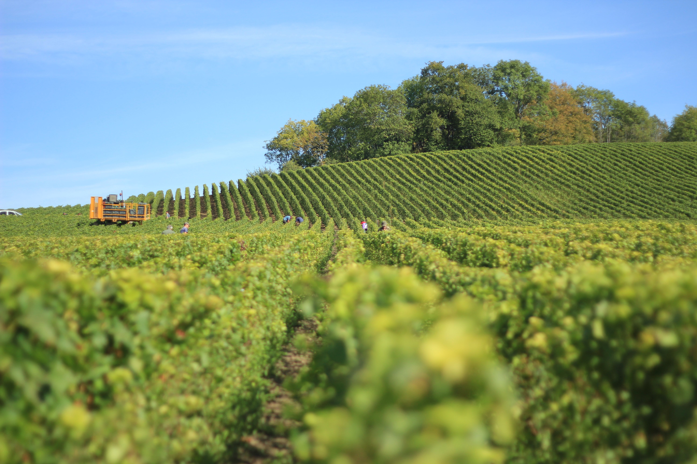
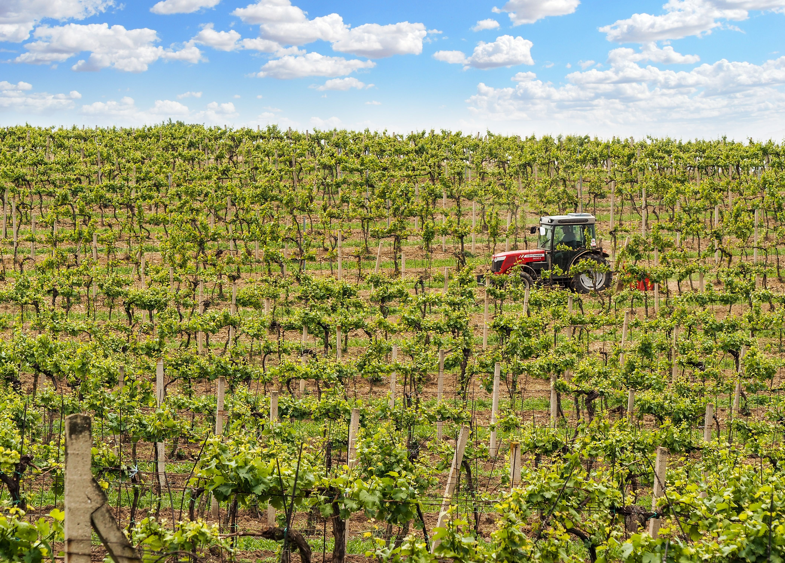

Logotype
Un logotype purement typographique, à l'image des grandes maisons : le mot-symbole en Cormorant Garamond largement interlettré, surmonté de la signature en capitales Montserrat.
Couleurs
Quatre couleurs seulement. Les neutres portent l'ensemble ; l'or n'intervient qu'en touche, comme un fil précieux.
Répartition indicative 60 / 30 / 10 — l'or reste minoritaire en toutes circonstances.
Typographies
Un duo contrasté : la rondeur classique d'une garalde pour l'émotion, la neutralité d'une linéale pour la lecture et l'interface.
Depuis quatre générations, notre famille cultive la vigne sur les coteaux de la Côte des Bar, dans le respect du terroir et des savoir-faire transmis.
Univers photographique
Lumières naturelles, matières vraies : la vigne, la craie, la cave, les mains. Pas de photos de banque génériques ni de mises en scène artificielles.




À faire / à éviter
Laisser respirer : grandes marges, sections aérées, logotype entouré de sa zone de protection.
Employer l'or avec parcimonie — filets, sous-titres, survols — pour préserver sa valeur.
Poser le logotype sur des fonds unis (crème, noir, photo sombre à faible contraste local).
Déformer, incliner, ombrer ou contourner le logotype ; modifier son interlettrage.
Introduire une couleur hors palette, ou utiliser l'or en aplat de grande surface.
Poser le logotype sur une photo chargée ou un fond à contraste insuffisant.